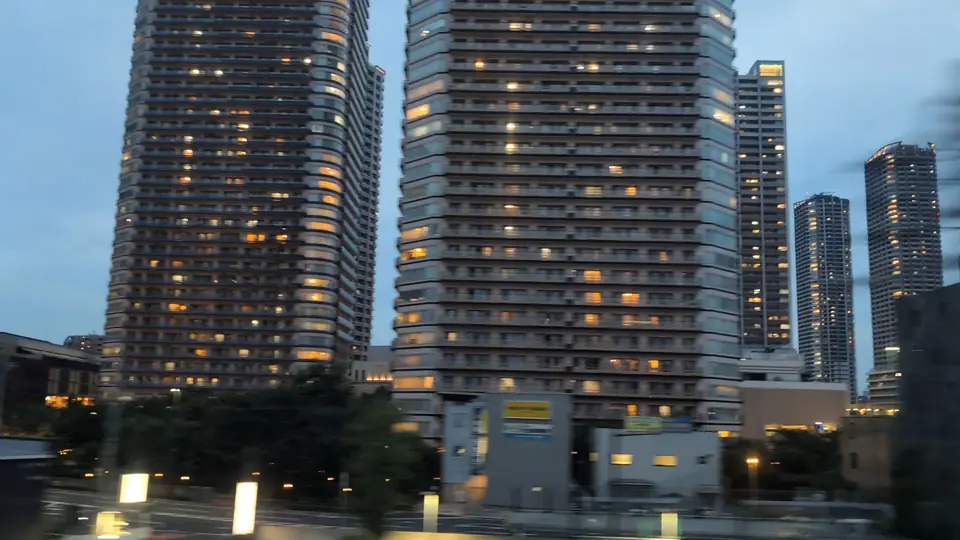

- Section
- Shinagawa → Shin-Yokohama, around Musashi-Kosugi
- Seat side
- Seat E · mountain side
- Timing
- About 14 minutes after leaving Tokyo on a Nozomi train
- Photos
- 4 photos
How did this tower cluster come about?
Right after the Shinkansen crosses the Tama River on Maruko Bridge, the Musashi-Kosugi tower cluster comes into view on the Seat E side. This is Nakahara Ward, Kawasaki City. The area was once filled with factories and company housing of major manufacturers such as NEC, Mitsubishi Fuso and Nippon Electric Glass. When those production functions moved to the suburbs or overseas in the 2000s, large plots of land opened up for redevelopment. Following Kawasaki City's plan for the Kosugi Station area, tall towers combining housing, offices and shops were built one after another. What you see from the train is the skyline this redevelopment produced.
More: Kawasaki City: Redevelopment around Kosugi Station (Japanese only)Wikipedia: Musashi-Kosugi Station redevelopment and high-rises
If you are traveling from Tokyo toward Shin-Osaka, start watching the Seat E · mountain side window as you approach Shinagawa → Shin-Yokohama, around Musashi-Kosugi. If you are traveling toward Tokyo, the order is reversed.
Why did so many towers concentrate at Musashi-Kosugi?
Musashi-Kosugi Station is a hub where JR Nambu, Yokosuka, Shonan-Shinjuku, and the Tokyu Toyoko and Meguro lines meet. From here, Shinagawa, Tokyo, Shibuya, Shinjuku and Yokohama are all reachable in 20 to 30 minutes, making the area attractive to commuters bound for both central Tokyo and Yokohama. The 2010 opening of the Yokosuka Line platform at Musashi-Kosugi further boosted access and clearly accelerated the pace of new construction and move-ins.
Supply-side conditions aligned too. Large, contiguous factory sites remained on both the north and south sides of the station, making unified large-block planning possible. Kawasaki City used redevelopment schemes that combined higher floor-area ratios with public open space. As a result, since 2008 more than twenty residential and office high-rises have been added, with more still under way. The tower cluster you see from the Shinkansen is, in effect, a compact picture of Japanese late-Heisei-to-Reiwa urban planning.
The concentration has drawn known concerns as well: crowding on schools, childcare and trains, and flooding of low-lying areas during Typhoon Hagibis in 2019. The bright skyline hides an ongoing discussion about how to manage that scale. Knowing this makes the brief window view more interesting rather than less.
Location at a glance
Open mapSwitch between the spot and the Shinkansen viewpoint.
How to catch Musashi-Kosugi Towers
1. Choose the window first
As you approach Shinagawa → Shin-Yokohama, around Musashi-Kosugi, start watching from Seat E · mountain side. Use Live Guide while riding, or the map on this page before you board.
The clearest view lasts only a few seconds. Decide the seat side and window direction before it arrives rather than reaching for your camera late.
2. Highlights
The strongest moment is the second you finish crossing the Tama River. Look toward Seat E in advance and enjoy the sudden switch from open sky above the river to a vertical wall of towers. At night, the layered apartment lights show the sheer density even more clearly.
Musashi-Kosugi Towers in photos


 Related
Maruko Bridge
Related
Maruko Bridge
 Related
Mt. Fuji from Ota
Related
Mt. Fuji from Ota
 Related
Mt. Fuji over Sagami Plain
Related
Mt. Fuji over Sagami Plain